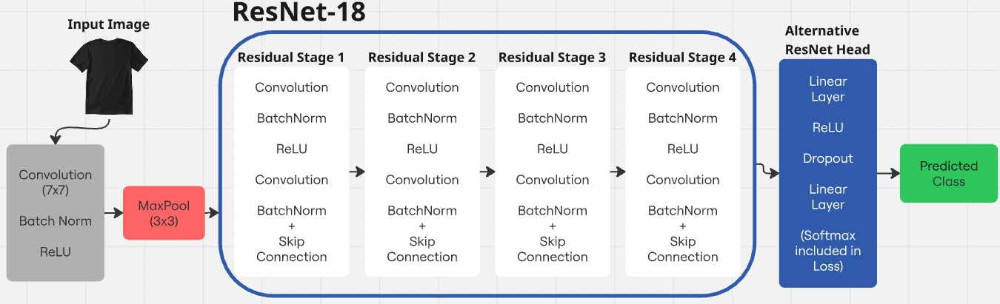
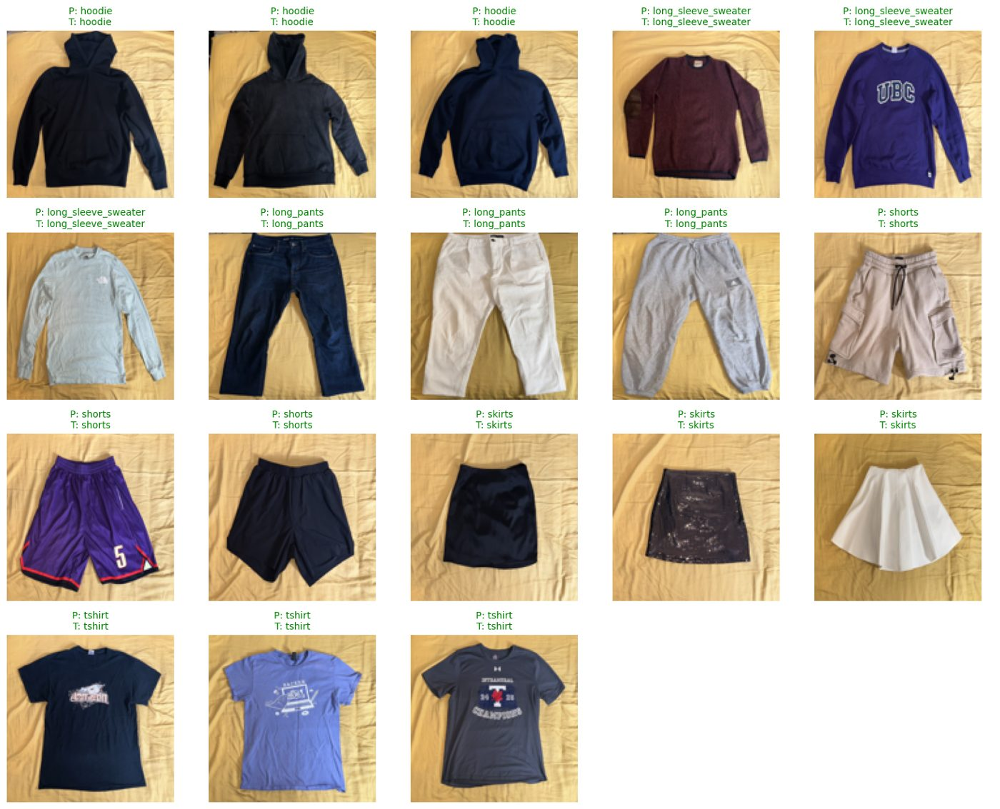
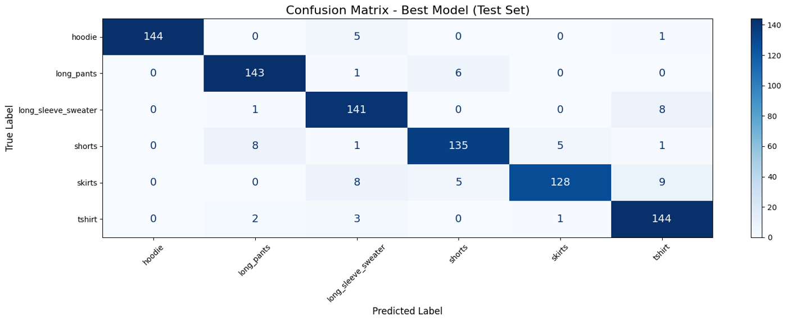
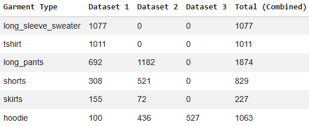
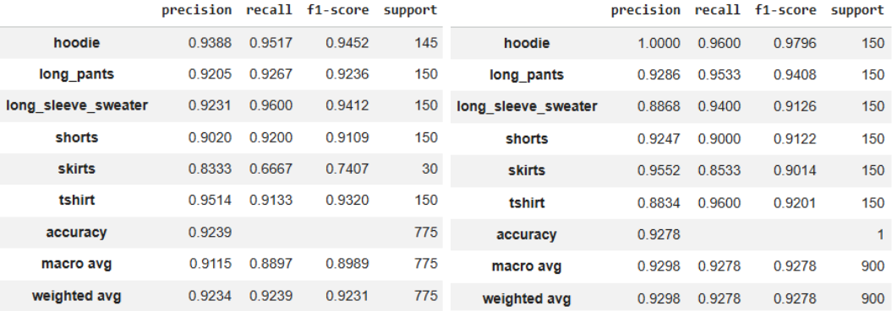

Reached 100% target detection and ±2° aim accuracy by reading a TF-Luna LiDAR over 400 kHz I²C during a servo-driven 115° polar scan.
Cut integration failures by building 7 isolated PlatformIO test environments in C++ to validate each peripheral (LiDAR, servo, hall sensor, IR beam, motor drivers) before bringing the system together.
Hit a 200 cm launch range by generating multi-frequency hardware PWM for the dual flywheel and indexer motors, with a staged duty-cycle spin-up to overcome static load before firing.
C++
ESP32
I²C
PlatformIO
Motor control
Hardware-in-the-loop
Garment classifier
Jan–Apr 2026
Convolutional neural network approach
A first step toward a clothes-folding robot: a model that looks at a single garment and tells which of six types it is. Read the final report (PDF).
Reached 92.8% test accuracy and 0.928 macro-F1, against 0.899 for a HOG + SVM baseline, by fine-tuning ResNet-18 with a custom fully connected head (8.5M trainable parameters).
Raised the weakest class (skirts) from 0.74 to 0.90 F1 by merging 3 datasets (6K+ images) and correcting an 8:1 class imbalance through capping and augmentation.

ResNet-18 backbone with a custom fully connected head.

Tested on clothes from my own closet: 18 of 18 correct.

Confusion matrix on the 900-image test set.

Images per class across the 3 merged datasets.

Per-class metrics before (left) and after (right) balancing the classes.
PyTorch
CUDA
Hyperparameter tuning
Data preprocessing
Mail delivery robot
Sep–Dec 2025
Colour-detection based, line-following rover
11 states 4 landmarks
Reached over 90% localization confidence across an 11-state topological map with only 4 distinguishable landmarks, using a discrete Bayes filter with probabilistic motion and measurement models.
Eliminated false landmark detections under changing light with a weighted colour classifier and an 11-frame debounce filter on camera measurements.
Completed autonomous deliveries to 3 random targets from an unknown start by splitting PID line-following and localization into separate ROS nodes talking over pub/sub topics.
ROS
rospy
Bayes filter
PID
Python
Linux
DC power supply
Sep–Dec 2025
Fully functional power supply built from scratch
0–19 V 99% accurate
Designed a two op-amp amplifier that turns a 0–2.5 mA sensing current into an adjustable 0–19 V output.
Built and tested an op-amp filter in SPICE that cuts noise above 50 Hz by 92%.
Designed a single-via PCB in Eagle with test pins, then fabricated, soldered and validated it with a multimeter and oscilloscope, landing within 1% of a lab bench supply.